at
at  to
to  at
at  is
is Statement
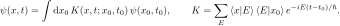
 solves the Schrödinger equation in
solves the Schrödinger equation in 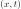
with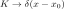
as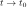
. Free particle: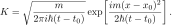
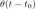
gives the retarded Green's function: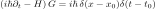
.Derivation of the path integral
Split
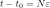
and insert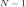
position completeness relations (Feynman 1948). For a short step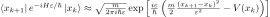
(Trotter). The exponent is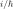
times the discretised action, so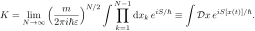
Classical limit
When
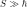
, the phases of neighbouring paths cancel except near the path with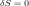
: Hamilton's principle emerges by stationary phase. Semiclassical (WKB) propagators keep this path plus Gaussian fluctuations (Dirac 1939).Worked example
Free propagator check: at
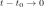
the Gaussian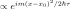
has width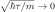
and unit integral, so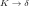
. For an electron and fs, the spreading scale is
fs, the spreading scale is 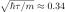
nm.Engineering applications
Path integrals underpin the Feynman diagrams of QED, quantum Monte Carlo in imaginary time (materials simulation), instanton tunnelling rates, and the Aharonov–Bohm phase
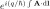
used in SQUIDs.Pitfall
The "measure"
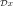
is not a true measure on paths in real time; the expression is defined as the limit of the time-sliced integrals (rigorous in imaginary time: Feynman–Kac).